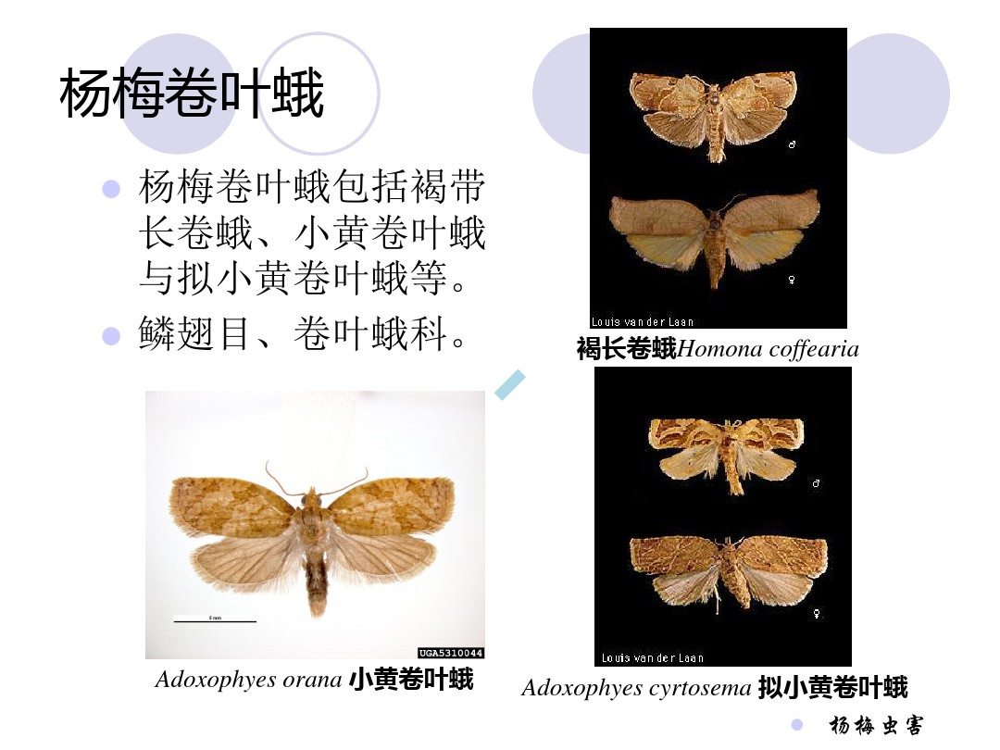
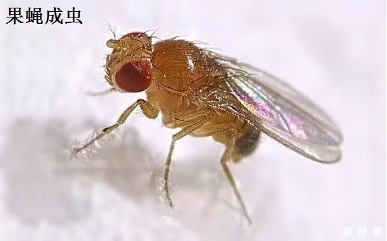
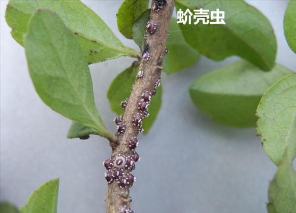
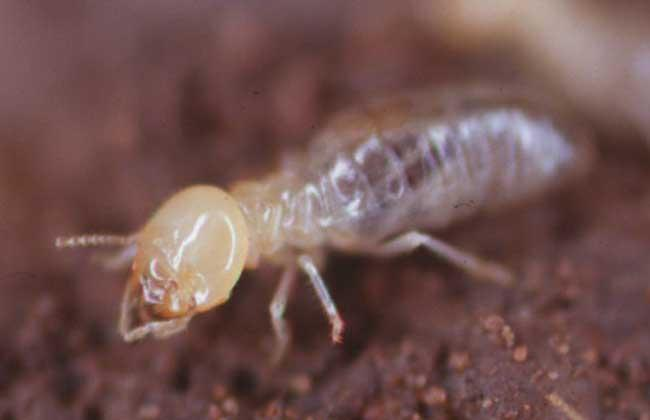
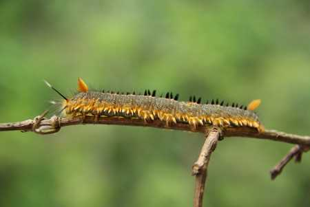
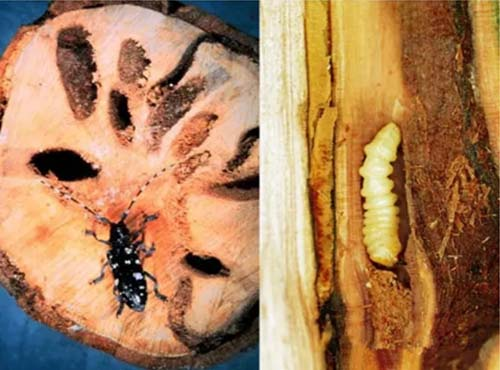

虫害情况查询
杨梅卷叶蛾

杨梅果蝇

果蝇是杨梅的主要害虫，以雌果蝇产卵于成熟的杨梅果实乳柱上，孵化后的幼虫蛀食危害。受害果实凸凹不平，果汁外溢和落果。
杨梅蚧类

危害杨梅的蚧类害虫，主要有杨梅柏牡蛎蚧、牡蛎蚧和樟盾蚧三种。
白蚁

杨梅白蚁，它啃食杨梅树的主干和根部，并筑起泥道，沿树干通往树梢，损伤其韧皮部及木质部，造成树体水分、养分等物质输送受阻，使叶片、枝梢、根系均呈“饥饿”状态，最后叶黄脱落，枝枯树死。
松毛虫

松毛虫可以危害多种林木，初孵的幼虫喜欢聚集在新梢嫩叶上，不过蔓延的能力很强，容易造成分散食害，严重时叶片仅剩叶脉。
天牛爆皮虫

在杨梅树近地表的主干部危害，造成整株死亡。